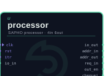
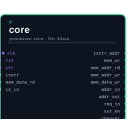
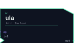
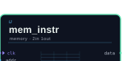
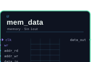
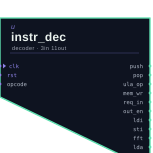
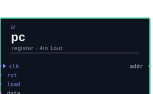
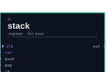
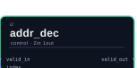
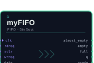

O processador SAPHO por dentro¶
Antes de ajustar parâmetros com confiança, vale entender o que exatamente está sendo criado. Esta página descreve a arquitetura do soft-processor SAPHO do ponto de vista de quem o usa: o que os parâmetros significam, como a máquina executa o programa e quais são as suas restrições.
Nada aqui precisa ser decorado para usar a plataforma. Mas quem entende a máquina escreve programas melhores para ela, e principalmente entende por que certas construções da linguagem custam caro.
Visão geral¶
O SAPHO é um processador de acumulador com arquitetura Harvard.
Processador de acumulador significa que não existe um banco de registradores. Existe um único registrador central, o acumulador (ACC), que recebe o resultado de toda operação da unidade lógica e aritmética (ULA). O padrão dominante é buscar um operando na memória de dados, tomar o próprio acumulador como segundo operando e devolver o resultado ao acumulador, com uma pilha de dados fornecendo o segundo operando quando a expressão exige.
Arquitetura Harvard significa que as memórias de programa e de dados são fisicamente separadas, cada uma com a sua largura e o seu barramento. O programa não pode se sobrescrever, e instruções e dados são acessados em paralelo.
Os três traços que definem o estilo da máquina¶
Toda largura é um parâmetro Verilog: da palavra de dados à mantissa e ao expoente do ponto flutuante, passando pelas profundidades das memórias e das pilhas.
Cada instrução do conjunto é um parâmetro booleano. O montador liga somente as instruções que o programa emprega, e o hardware das demais é eliminado na geração do circuito.
Um pipeline raso de três estágios, sem forwarding. Como a ULA é combinacional e acumula a cada ciclo, nem os saltos condicionais quebram o fluxo.
Esse último ponto merece ênfase, porque é raro. Em instrumentação, saber que qualquer algoritmo executa sem interromper a cadeia de busca, decodificação e execução vale mais do que o desempenho de pico de uma máquina superescalar: o tempo de resposta é determinístico.
O caminho de dados¶
O processador executa em três estágios síncronos: busca (F), decodificação (D) e execução (E).
flowchart LR
subgraph F["Busca (F)"]
PC["Contador de<br>programa"] --> MI["Memória de<br>programa<br><small>instr.mif</small>"]
MI --> PF["Prefetch"]
SPI["Pilha de<br>instruções"] --> PC
end
subgraph D["Decodificação (D)"]
PF --> ID["Decodificador<br>de instrução"]
ID --> SPD["Pilha de<br>dados"]
ID --> MD["Memória de<br>dados<br><small>data.mif</small>"]
end
subgraph E["Execução (E)"]
MD --> ULA["ULA"]
SPD --> ULA
ULA --> ACC["Acumulador"]
ACC --> ULA
end
ENT["Entrada"] --> D
E --> SAI["Saída"]
ACC -.->|condição de desvio| PF
Repare na seta tracejada: a condição de desvio realimenta a busca a partir do acumulador. É esse laço curto que permite executar saltos condicionais e chamadas de função sem bolhas no pipeline.
Os módulos gerados¶
O processador compõe-se de poucos módulos Verilog, criados a partir de moldes parametrizáveis que acompanham o YANC. Reconhecê-los é útil ao navegar no PRISM, que desenha cada um com símbolo próprio.

processoro topo

coreo núcleo

ulaaritmética

mem_instrprograma

mem_datadados

instr_decdecodificador

pccontador

stackpilhas

addr_decendereços

myFIFOfila genérica
O módulo processor é o topo e instancia o núcleo e as duas memórias: mem_instr, a memória de programa, somente leitura, carregada com a imagem <proc>_inst.mif, e mem_data, a memória de dados, carregada com <proc>_data.mif e capaz de uma leitura e uma escrita por ciclo.
O núcleo, core, reúne o caminho de dados com o acumulador, as pilhas, a busca de instruções e o contador de programa, apoiado pelo decodificador instr_dec e pela ula, na qual cada operação é um submódulo e somente os usados sobrevivem. Completam o conjunto o decodificador de endereços addr_dec, para múltiplas portas, e a FIFO genérica myFIFO, útil para acoplar o processador ao mundo externo sem depender de propriedade intelectual de fabricante.
Os parâmetros fundamentais¶
Ao criar um processador você escolhe, direta ou indiretamente, os valores da tabela abaixo. Eles aparecem como diretivas no topo do arquivo C± e como parameter no Verilog gerado.
Parâmetro |
Diretiva |
Significado |
|---|---|---|
|
|
Largura da palavra de dados. Todo inteiro do programa tem esse tamanho, em complemento de dois |
|
|
Largura da mantissa do ponto flutuante |
|
|
Largura do expoente do ponto flutuante |
|
Profundidade da pilha de dados |
|
|
Profundidade da pilha de sub-rotinas |
|
|
Número de portas de entrada |
|
|
Número de portas de saída |
|
|
Constante de divisão da função |
|
|
Tamanho da FFT, \(2^{\texttt{FFTSIZ}}\) pontos, no endereçamento com reversão de bits |
Perigo
A palavra precisa comportar exatamente o formato de ponto flutuante: NUBITS deve ser igual a NBMANT mais NBEXPO mais um, o bit de sinal. A AURORA valida essa igualdade no formulário de criação e recusa combinações inválidas.
Entrada, saída e o mundo externo¶
O processador conversa com o exterior por portas numeradas, criadas conforme #NUIOIN e #NUIOOU e acessadas no programa por in(), out(), fin() e fout(). No hardware, cada porta vira sinais de dados e de controle no topo do módulo processor; é por eles que o projeto de FPGA conecta o processador a conversores, FIFOs e outros blocos.
Dois recursos opcionais completam a interface:
- A interrupção
Faz o processador desviar para um ponto configurado do programa quando o pino
itrpulsa, marcado no código pela diretiva#PRACA.- O marcador
#TOAQUI Gera um pino chamado
cheguei, pulsado sempre que o programa passa pelo ponto marcado, o que permite sincronizar hardware externo com fases do algoritmo.
Por que não há recursão¶
Esta é a restrição que mais confunde quem chega do software, e a explicação está na arquitetura.
Cada variável do programa, incluindo parâmetros e locais, vive em um endereço fixo e único da memória de dados. Não há quadros de pilha: a pilha de sub-rotinas guarda endereços de retorno, não contextos. Uma função que chamasse a si mesma sobrescreveria os próprios dados na segunda entrada.
A contrapartida é valiosa: é justamente esse endereçamento fixo que permite à AURORA mostrar cada variável pelo nome nas formas de onda, ciclo a ciclo. Você troca recursão por observabilidade total, o que em projeto de hardware costuma ser o melhor negócio. Quando o algoritmo é essencialmente recursivo, o caminho C++ atende, conforme Recursos avançados.
Um processador por tarefa¶
Como cada processador é gerado sob medida, o padrão de projeto no SAPHO difere do mundo dos processadores fixos. Em vez de uma máquina grande que faz tudo, criam-se várias máquinas pequenas, uma por tarefa, conectadas por um top-level em Verilog.
flowchart LR
SIG["Sinal de<br>entrada"] --> P1["Processador A<br><small>detecta eventos</small>"]
SIG --> FIFO["FIFO"]
P1 -->|gatilho| FSM["Máquina de<br>estados"]
FSM -->|interrupção| P2["Processador B<br><small>calcula a métrica</small>"]
FIFO -->|amostras| P2
P2 --> OUT["Resultado"]
O diagrama acima é a forma de um caso real do laboratório: um detector de novidade no qual um processador segmenta o sinal pelos cruzamentos por zero e dispara, por interrupção, um segundo processador que drena a FIFO e mede a distância até uma referência.
A AURORA suporta esse fluxo diretamente. Um projeto pode conter quantos processadores forem necessários, cada um com a sua pasta, o seu fonte e os seus parâmetros, todos integrados por um top-level e um testbench comuns, conforme Projetos.
Leitura relacionada¶
O ponto flutuante do SAPHO detalha o formato numérico próprio e a precisão que se pode esperar dele.
O conjunto de instruções lista as famílias de opcodes e ensina a ler as trilhas de assembly nas ondas.
Recursos avançados mostra o custo em área de cada construção da linguagem.